ABSTRACT
This project investigates whether the popularity of U.S. reality dating shows (measured by their viewership and ratings in each year) is associated with dating app activity (measured by their revenue and user counts each year) in the United States from 2019 to 2026. Prior research suggests that both dating shows and dating apps share similar sociocultural sentiments regarding romance and relationships, and we sought to see if this association can also be reflected by the data.
We focused on three specific major dating shows — Love Island USA, The Bachelor, and Love Is Blind — and we examined their ratings and viewership along with annual user count and annual revenue for Tinder, Bumble, and Hinge. After some exploratory analysis, we found issues with multicollinearity, autocorrelation, and skewness in our datasets, which we fixed by segregating potentially correlating predictors, incorporating Newey-West robust standard errors, and applying log transformations, respectively.
For our main analysis, we applied 12 OLS regression models (combinations of our 6 predictor variables and 2 prediction variables) to test whether dating show popularity could predict dating app user counts and revenue. Our results suggest that there is typically a positive relationship between dating show popularity and dating app popularity, though this was not true for every show, and it often depended on whether we measured dating app popularity based on viewership data or ratings data. The Bachelor consistently produced the strongest results.
Our findings provide preliminary evidence that dating shows and dating apps may reflect similar social interests and attitudes toward dating. However, our study is limited by a small sample size and the availability of public data. Future research using larger datasets and additional measures of dating behavior would help determine whether this relationship remains consistent over time.
Authors
- Anisha Ramesh — Data curation, Project administration, Visualization, Analysis, Writing
- Alisa Liao — Data curation, Analysis, Conceptualization, Writing
- Junyou Feng — Background research, Methodology, Analysis, Writing
- Derek Xu — Background research, Data curation, Methodology, Analysis, Writing

BACKGROUND
The things that happen in dating shows are not like actual dating. As a form of reality TV that wishes to attract a large, engaged audience, it's inevitable that producers and writers of dating shows artificially infuse as much drama and tension as possible into each episode and season. As early as 2007, a study already found that greater viewing of dating shows strongly predicts the tendency to believe that "men are sex-driven," "dating is a game," and "women are sex objects." A study looking at a more recent dating show, "Singles Inferno," also found that the show perpetuates gender stereotypes and unrealistic beauty standards.
Dating apps, such as Tinder, Hinge, and Bumble, have also played a large role in the modern dating scene. The Pew Research Center finds that 30% of Americans have used dating apps at least once, and this number is particularly higher for younger and queer people. However, just like dating shows, dating apps have also proven to be quite problematic — over half of young women (18–34) report negative interactions while using dating apps, and other studies find that dating app usage correlates with substance abuse and insecurity about physical appearance.
Our project is motivated by the connections we see between dating shows and dating apps: the sexualization of women, superficial perceptions of romantic connection, and the perpetuation of unrealistic beauty standards. We chose three shows that are relatively diverse in their premises and values — Love Island USA magnifies how dating is messy and full of drama, The Bachelor magnifies how dating is competitive, and Love Is Blind removes physical appearance from the equation entirely. If we were to find correlations between certain shows and dating app usage, but not others, there is an argument to be made that the values underlying those shows specifically are more tied to dating app usage.
HYPOTHESIS
WE EXPECT A POSITIVE RELATIONSHIP BETWEEN THE POPULARITY OF U.S. REALITY DATING SHOWS AND DATING APP ACTIVITY IN THE U.S. FROM 2019 TO 2026.
Specifically, when a season has higher average viewership and ratings, we predict that user counts and annual revenue for apps like Tinder, Bumble, and Hinge will also increase in the same year. We make this prediction because dating shows and dating apps seem to share similar underlying sociocultural sentiments, and dating shows may make dating more visible and normalized to viewers, making them wish to personally engage in dating behavior themselves.
However, we do not expect this relationship to be perfectly and consistently apparent across all years, since other existing factors — like economic conditions or app-specific changes — may also affect user growth and revenue.
EXPLORATORY DATA ANALYSIS
Viewership and Ratings Over Time
To visualize the ratings for the three shows on a broader scale, we grouped show ratings by year of airing. It seems like The Bachelor and Love Island USA (except its most recent season) got better over time, while Love Is Blind remained relatively stable.
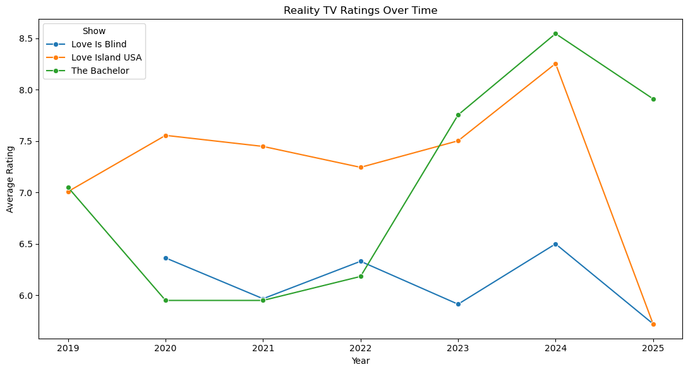
We observe that Love Is Blind had a large increase in viewership in 2023, while The Bachelor slowly lost viewership over time. Love Island USA started off with the lowest viewership and had a small increase in 2022.
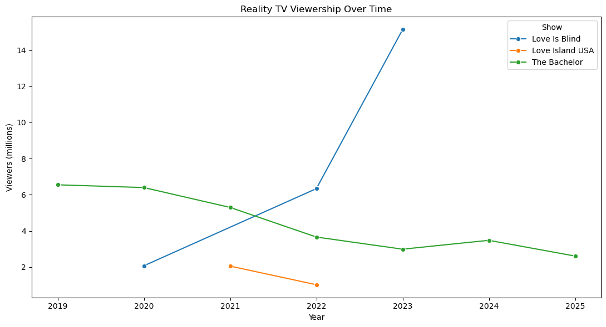
Next, we made a comparative box plot per show, with one box plot per season.
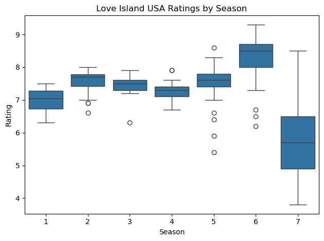
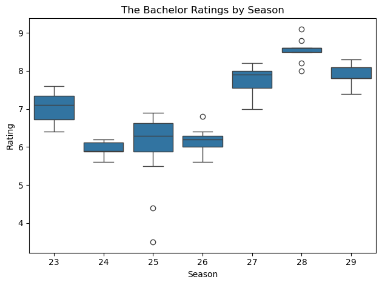
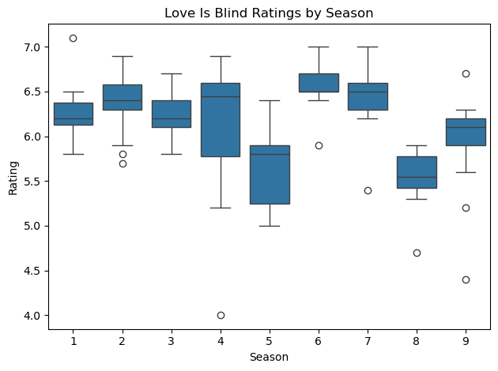
Love Island USA appears generally consistent through its first six seasons, with season 7 dropping sharply. The Bachelor's ratings move in an almost sinusoidal pattern across seasons, and Love Is Blind stays relatively consistent, with season 4 showing the widest range.
Relationship Between Viewership and Ratings
We tested for a relationship between a show's viewership and its ratings for a given season, expecting a "better" show (higher ratings) to attract more viewers. This also matters for our later modeling: if viewership and ratings are correlated, we can't use both as predictors in the same model.
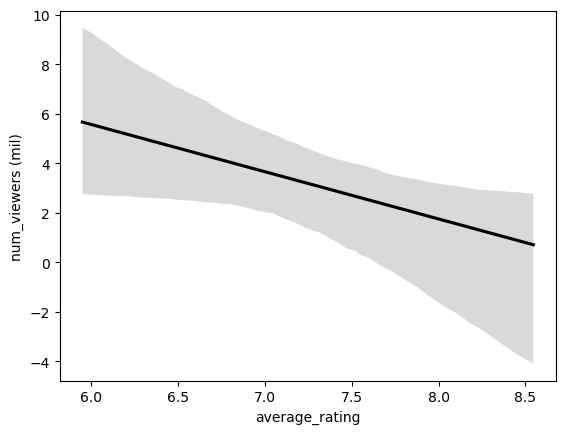
This was unexpected: for all three shows, as well as combined, a season's ratings and viewership are actually negatively correlated — a "better" show ends up attracting fewer viewers. One possible explanation relates to systematic bias in who rates a show: perhaps only a select, more dedicated subset of viewers rate the less popular seasons, and their dedication leads to more favorable ratings.
Dating App Usage Over Time
Both Bumble and Hinge steadily increased in users over the years, with no sudden explosion or period of stagnation. As user counts increased, revenue increased in step — Tinder, absent from the user-count data, makes considerably more revenue than the other two apps.
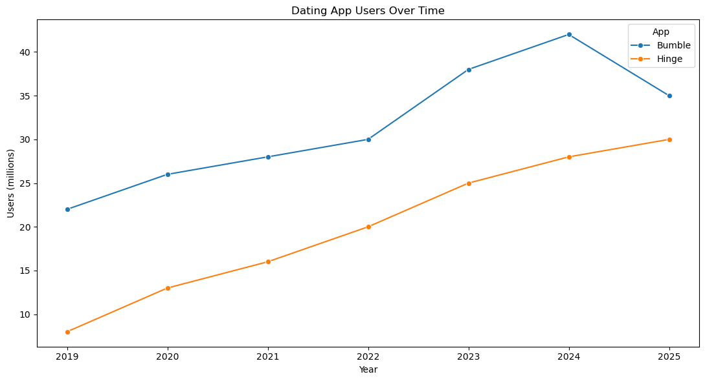
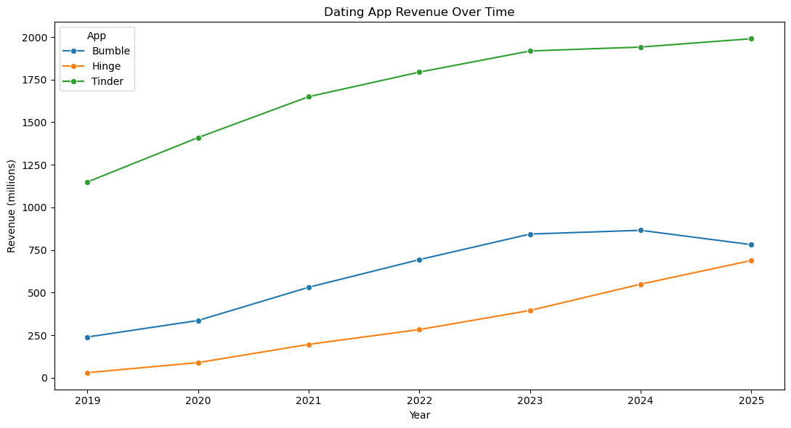
REGRESSION ANALYSIS
Standard OLS Regression
We first tried standard OLS regression to see the immediate relationship between dating show popularity and dating app popularity. Results were highly insignificant, with all p-values far above .05 and extremely low r² values. However, high Durbin-Watson values for both users and revenue (0.808 and 0.638) suggested strong positive autocorrelation — expected, since our data follows the progression of time. Combined with the multicollinearity between viewership and ratings, this meant standard OLS wasn't the right tool for our data.
Log Transformations & Newey-West Standard Errors
We checked each dataset for skewness to determine whether a log transformation was needed. Show viewership was clearly right-skewed and benefited from a log transform; ratings and app users were already reasonably distributed; and revenue, while somewhat skewed, actually became more skewed (in the other direction) after a log transform, so we preserved its original form.
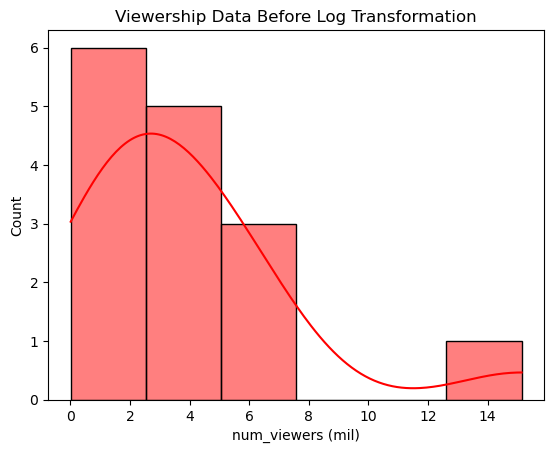
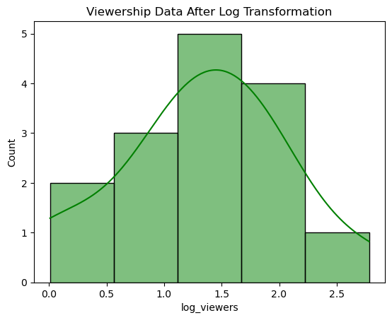
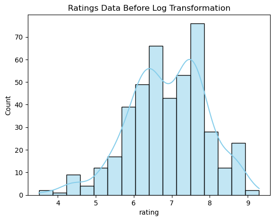
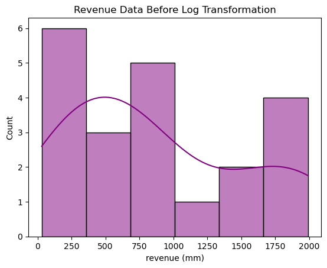
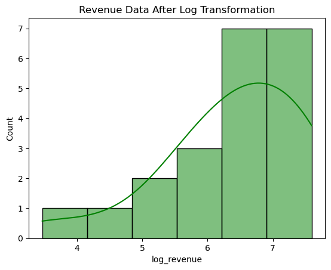
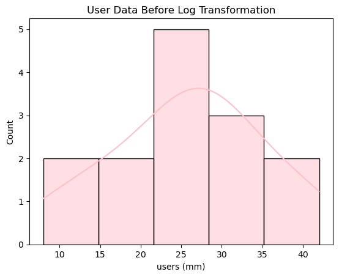
Our data is also a time series spanning 2019–2026, which causes autocorrelation — a violation of standard OLS's independence assumption. To address this, we applied Newey-West robust standard errors, which stabilize variance and account for autocorrelation. To avoid multicollinearity, we never fit a show's viewership and ratings into the same model.
Dating App Revenue Model
We fit six separate OLS models — one per show-popularity predictor — against total dating app revenue.
| Predictor | Adjusted R² | P-value |
|---|---|---|
| log viewers — The Bachelor | 0.905 | <0.001 |
| rating — The Bachelor | 0.413 | <0.001 |
| log viewers — Love Is Blind | 0.350 | <0.001 |
| rating — Love Is Blind | −0.143 | 0.318 |
| rating — Love Island USA | −0.178 | 0.658 |
| log viewers — Love Island USA | n/a | — |
The Bachelor's viewership and rating produced the highest adjusted R² for dating app revenue, suggesting a positive correlation between The Bachelor's popularity and dating app revenue. All shows except Love Island USA produced p-values below 0.05. For a sanity check, we plotted the best model's predictor (The Bachelor's log viewership) against revenue, and contrasted it with the worst non-null model (Love Island USA's rating).
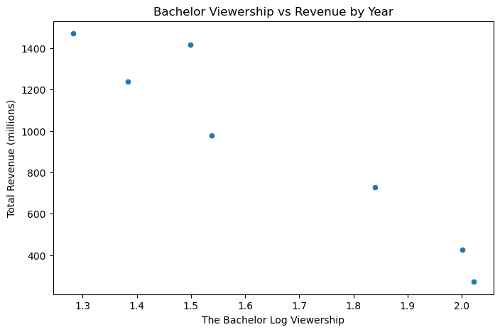
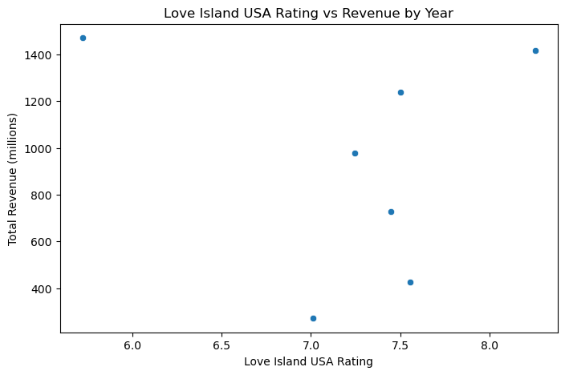
This matches expectations: The Bachelor's viewership shows a clear linear pattern against revenue, consistent with its high R², while Love Island USA's ratings show a fairly random pattern, consistent with its low R².
Dating App Users Model
We repeated the same process, this time predicting total dating app user counts.
| Predictor | Adjusted R² | P-value |
|---|---|---|
| log viewers — The Bachelor | 0.799 | <0.001 |
| log viewers — Love Is Blind | 0.757 | <0.001 |
| rating — The Bachelor | 0.477 | <0.001 |
| rating — Love Island USA | −0.200 | 0.974 |
| rating — Love Is Blind | −0.215 | 0.572 |
| log viewers — Love Island USA | n/a | — |
The Bachelor's viewership again produced the highest adjusted R², closely followed by Love Is Blind's viewership. Again, every show except Love Island USA produced a p-value below 0.05.
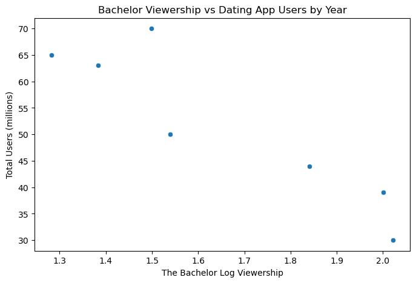
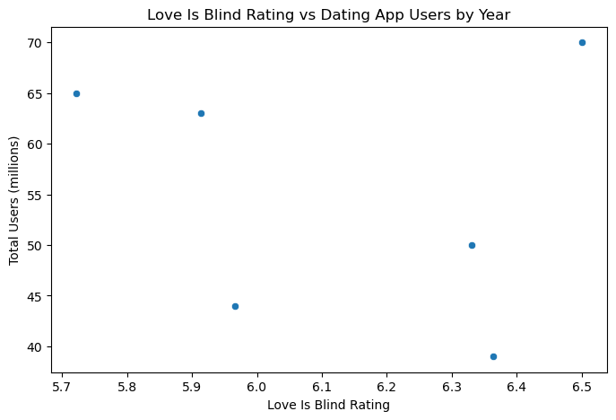
DISCUSSION
We found that most models identify statistically significant relationships between dating app popularity and dating show popularity, and this relationship is particularly strong for The Bachelor. One possible explanation is that The Bachelor's premise — one person dating and choosing among many contestants — most closely parallels the competitive, choose-among-many nature of dating apps themselves.
We also considered whether time itself was a confound, since both dating app metrics and dating show metrics could simply reflect the passage of time. However, our show-popularity measures don't increase consistently over time the way app revenue and usage naturally accumulate, suggesting time alone doesn't explain the relationship.
Limitations
- Our sample size is small (14 yearly observations), which severely limits the statistical validity of any regression model we run.
- Our operationalizations of "popularity" may be imperfect — people can be influenced by dating culture without ever rating a show or paying for an app.
- Ratings data may be biased, since only the most dedicated fans tend to actively rate shows and episodes.
- Shared sociocultural sentiment might not fully explain the correlations we observe, even though we favor that interpretation.
Future research could investigate the three-way relationship between sociocultural attitudes toward dating, dating app usage, and dating show viewership more directly — perhaps through surveys rather than aggregated metrics like ours — and would benefit from a larger, more resourced dataset than we had access to.
ETHICS
All data used was existing, public, and anonymous — no human subjects were surveyed or recruited. We selected this topic because we suspected dating apps and dating shows share a sense of superficiality, and we were careful to acknowledge that this framing itself carries an implicit judgment worth being transparent about.
We also considered honest representation: a similar-looking pattern between dating app and dating show popularity could imply causation it doesn't support, and may instead reflect an unaccounted confound (for example, COVID-19's effect on both media consumption and app usage). We do not believe this project has any major negative ethical implications, and we encourage healthy skepticism when reading our results.